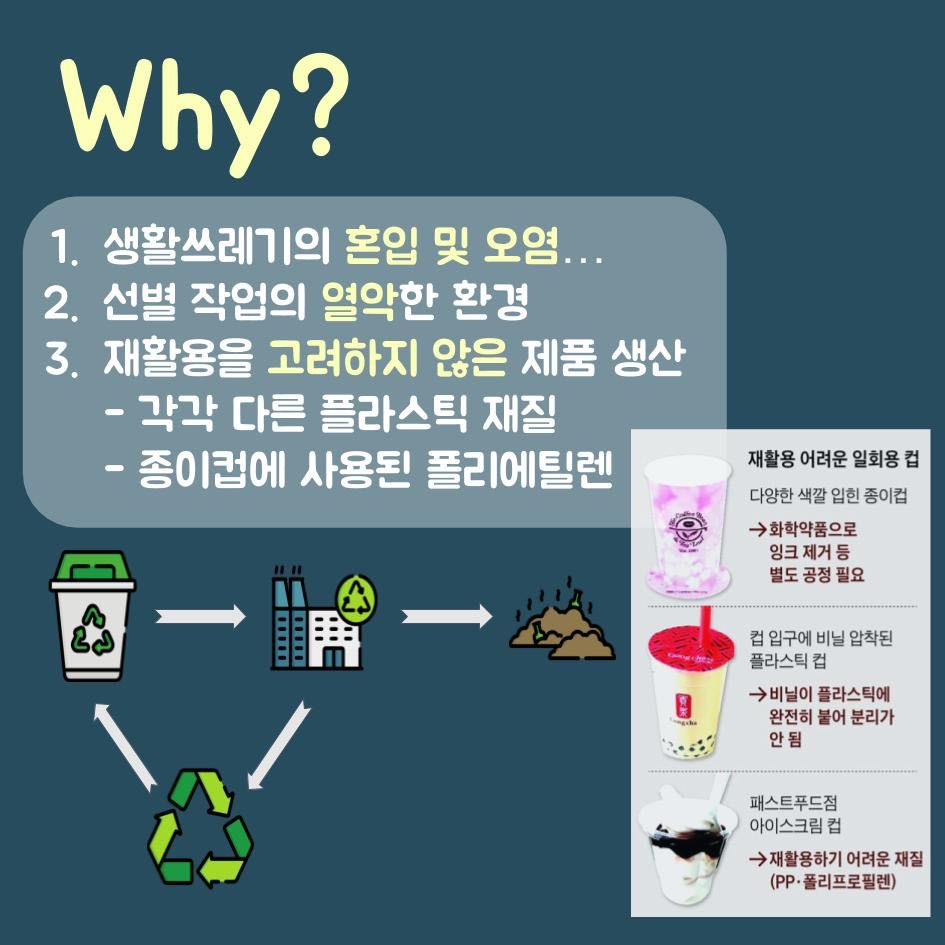
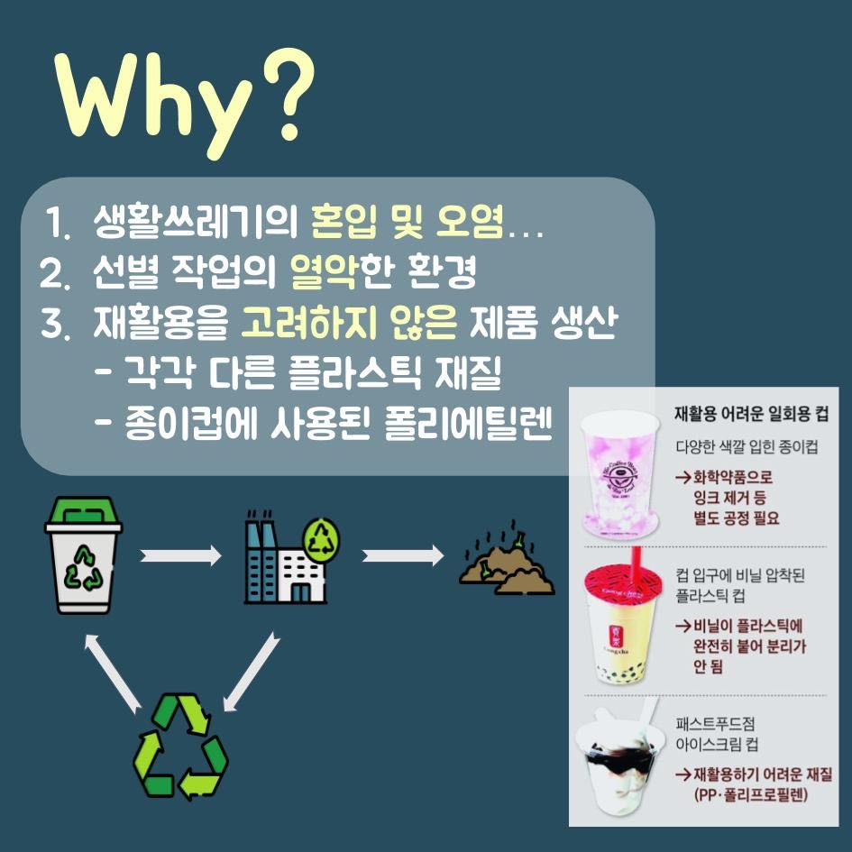

컵앗이 - 공유컵 프로젝트





안녕하세요! 저희는 경희대학교 시민교육에서 공유컵 프로젝트를
진행하고 있습니다.
본 프로젝트는 일회용 컵 자체의 사용량을 줄이자에 중점을 두고 있습니다.
일회용컵 보증금제, 텀블러 사용 권장 켐페인 등과 같은 방향에서
경희대 생활권 내에서 공유경제를 컨셉으로 따릉이와 전기 킥보드 같이,
`테이크 아웃 컵 또한,공유하면 어떨까?`
라는 생각으로 본 프로젝트를 시행하게 되었습니다.
`참여의사를 여쭈어보지만, 반드시 참여한다는 듯은 아닙니다.`
이 프로젝트는 이런 아이디어가 있으면 카페 입장에서
1. 어느 점이 참여에 도움을 주었는지
2. 그렇지 않다면, 개선해야 할 점은 무엇인지
를 알아보기 위함입니다.
커피 1회당 제공하는 일회용 컵 1개의 가격은 플라스틱 투명 컵 (약 98.4원) 과
뚜껑(약 23.2원), 빨대(약 4.4원), 홀더(약 23.8원)을 합치면 약 149.8원 입니다.
이 150원은 소비자에게 할인을, 카페에게 지출 비용 감소를 유도합니다.
두번째로, 환경 오염을 줄이기 위한 활동 참여로
이미지 상승이나 홍보 효과 등을 기대할 수 있습니다.
공유 컵은 구청에서 지원받아 카페에서 부담하는 비용은 없을 것입니다.
위생은 가장 중요한 문제입니다.
초기 단계에서 세척이 용이하지 않은 음료를 제외하거나,
컵의 개수를 제한하고, 세척 도구 제공을 지원합니다.
또한 이런 실험 단계에서 일어나는 문제점들을
관리자 측에서 적극 수렴해 해결 할 예정입니다.
공유 컵이 반납되지 않을 수 있습니다.
만약 훼손이나 유실되어도 카페에서 부담하지 않습니다.
또한 컵앗이 프로젝트 로고를 컵에 부착합니다.
아래의 링크로 가시면 구글 설문에 참여하실 수 있습니다.
구글 설문지 참여